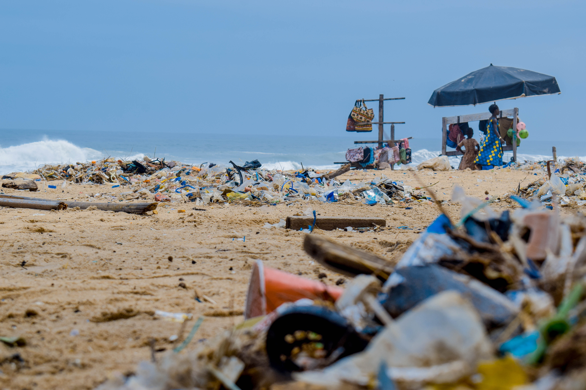
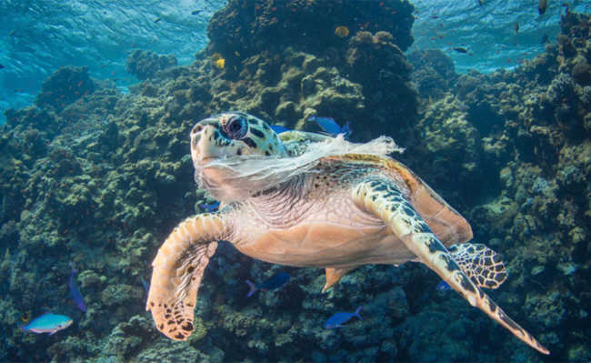
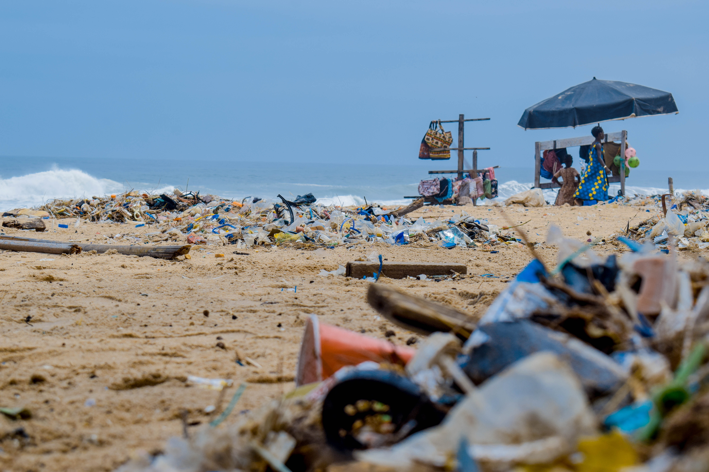
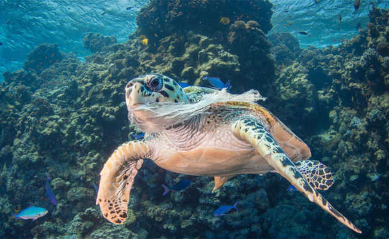
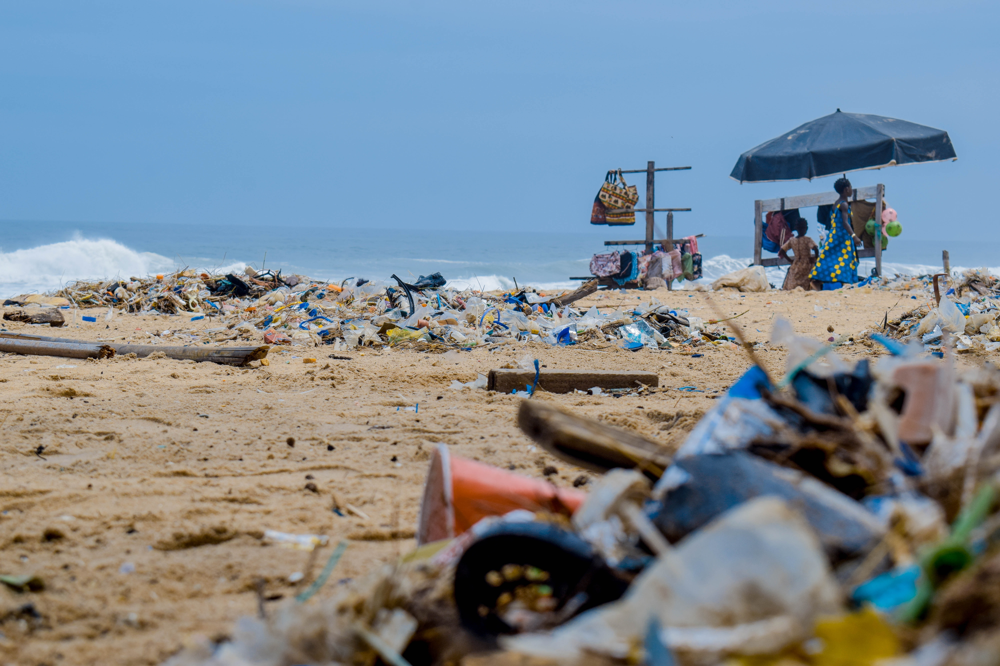
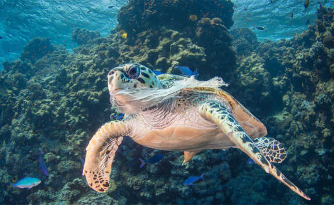

Atualmente 80% do lixo que está nos oceanos vêm de fontes terrestres, mais precisamente da atividade humana, e 20% são de atividades realizadas no mar, como a pesca e os transportes marítimos.
A ingestão de resíduos plásticos provoca a perfuração do tubo digestivo dos animais podendo levá-los a morte. Os que concentram muitas partículas de microplasticos no seu interior, ficam com uma falsa sensação de saciedade, assim eles perdem a energia, capacidade de locomoção, de crescimento e reprodução, gerando seu desfiamento.
As redes de pescas perdidas podem afetar diretamente no ambiente marinho, um fenômeno conhecido como "pesca fantasma", onde ela provoca a morte da fauna local e gera diversos impactos
50 anos
650 anos
450 anos
450 anos

